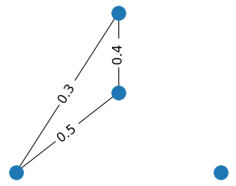

TDA Glossary
- Attention graph
- We can treat each Transformer's attention matrix Aattn as an adjacency matrix of some weighted graph, where the vertices represent tokens, and the edges connect pairs of tokens with mutual attention weights. In our current work, we additionally transform this matrix by the following formula: A' = 1 - max(Aattn , ATattn ), making it symmetric. Further, we consider weighted undirected graph G, which corresponds to this new matrix A'.
- Attention graph filtration
- Attention graph filtration is an ordered set of graphs Gτi filtered by increasing attention weight thresholds τi.
Filtering edges lower than the given threshold affects the graph structure and its core features.
To see how it happens, look at a little toy example below. When we filter out edges with weights 0.1, two cycles disappear. When we additionally filter out the
edge with weight 0.2, one vertex becomes isolated, and thus new connected component appears.

Alternatively, we can filter out the edges with weights larger than the threshold τi. In this variant of the filtration, new edges will appear, and connected components will disappear while we increase τi. For example, when we cut off all edges with weights more than 0.1, there are two connected components. But when we increase τi to 0.2, only one connected component remain. By increasing the threshold further, we get the initial graph again.
Both types of the graph filtration can be used to build the barcode.
- Betti numbers
- We consider β0 (the number of connected components of the graph) and β1 (the number of independent cycles of the graph) as the
core features of the attention graphs. More formally and generally these numbers are defined as dimensions of the 0-th and 1-st homology groups of the graph
(or associated complex) correspondingly.
Refer to Chapter 2 of the Algebraic Topology textbook from Allen Hatcher for a more detailed introduction to homology groups.
- Barcode
-
TDA techniques allow tracking changes, happening through filtration, by identifying the moments of when the features appear (i.e., their "birth") or disappear
(i.e., their "death"), and associating a lifetime to them. The latter is encoded as a set of intervals called a "barcode", where each interval ("bar")
lasts from the feature's "birth" to its "death". The barcode characterizes the persistent features of attention graphs and describes their stability.
You can find a brief explanation of this concept in this introductory video. Also, refer to the paper Topology And Data by Gunnar Carlsson for more formal and precise definitions.
Here we provide an example of the barcode of the little graph from the above, corresponding to the second type of filtration and the connected components feature.
At the threshold zero, we filter out all edges of the graph with weights more than zero, and four connected components are present. So there are four bars — each one corresponds to one connected component. On the diagram, we draw only three of them because one connected component is always present, so there is no point in tracking its dynamic. When we add edges with a weight of 0.1, two connected components disappear, so two bars end at point 0.1. When we add an edge with a weight of 0.2, one more connected component disappears, so the remained bar ends at 0.2.